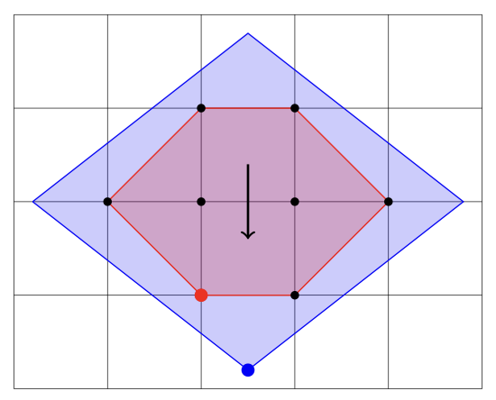

Course Information
Instructor: Nathan Klein
Syllabus: Link
Lectures: Tuesday and Thursday, 3:30 - 4:45pm in CDS 701
Office Hours: Tuesday 1:30 - 3:30, Thursday 2:30 - 3:30, and by appointment
Prerequisites: Strong undergraduate-level knowledge of algorithms, linear algebra, and
probability. Some familiarity with linear programming and at least one of CS 530, 531, or 537 is
recommended but not required. Motivated, mathematically mature undergraduate students who have excelled in CS 237 and CS 330 are also welcome.
Grading: Four homework sets (15% each, lowest dropped), scribe one lecture (10%), participation and (very basic) quizzes (15%), and a final project (30%)
Cow: Point set from Mathematica
Overview
We will survey a simple but powerful framework for designing approximation algorithms known as "Relax and
Round." Given a (possibly NP-Hard) discrete optimization problem, this framework first relaxes it into a
polynomial time solvable one over a continuous domain. It then solves this easier problem, whose
solution can have fractional coordinates: for example, it could assign a variable to be half true and
half false in a SAT formula. Below, in pink is the convex hull of the feasible solutions of a discrete
optimization problem. In purple is a relaxation of it.

In the final step, we round this fractional solution (above in blue) to an integer one (above in red).
Our goal will be to find a rounding procedure that, like a good translator, finds an integer solution that approximately preserves the key properties of the fractional one such as cost.
There are many beautiful methods known for performing this rounding step, which will be our main focus.
We will discuss many of them, such as the use of integral polytopes, iterative rounding, iterative
relaxation, and independent and dependent randomized rounding. The course will emphasize graph problems as well as results from
the past decade with exciting open directions.
Course Schedule
Weeks 1 and 2: Intro and Independent Randomized Rounding
Lecture 1, Tuesday 9/3: Admin, Introduction to Approximation Algorithms and Rounding [Notes]
We will use Vertex Cover to review the basics of approximation algorithms, linear programming, integrality gaps, and the relax and round framework. Related lectures: [Chakrabarty].
Lecture 2, Thursday 9/5: Independent Randomized Rounding for Congestion Minimization [Notes]
After a recap of relax and round using a more polyhedral lens, we will review basic probability and Chernoff bounds. Then we will discuss using independent randomized rounding for the congestion minimization problem. Related lectures: [Lee] [Chakrabarty], also see Chapter 5.11 of the Williamson-Shmoys textbook and this paper by Raghavan-Thompson.
Lecture 3, Tuesday 9/10: Independent Randomized Rounding for \(k\)-edge-connectivity [Notes]
We will review basic graph concepts like edge connectivity and minimum cuts, as well as Karger's bound on the number of \(\alpha\)-near minimum cuts (see this paper for the version we did in class as well as a more precise bound). We will then discuss Karger's algorithm for finding \(k\)-edge-connected graphs of approximate minimum cost.
Lecture 4, Thursday 9/12: Overflow, Quiz 1, Open Questions, and Work Session [Flashcards]
We will finish the previous lecture and give time for questions on what we have covered so far. Then we will have a short quiz on the flashcards posted for this lecture, after which some open questions will be discussed. Time permitting, there will be some group work on the homework. Some topics mentioned in class:
Weeks 3, 4, and part of 5: Dependent Randomized Rounding
Lecture 5, Tuesday 9/17: Randomized Pipage Rounding
We will first prove the integrality of a natural formulation of the spanning tree polytope and introduce Randomized Pipage Rounding. Related lectures on pipage rounding: [Chakrabarty] [Oveis Gharan].
Lecture 6, Thursday 9/19: Randomized Pipage Rounding and an Improved Approximation for \(k\)-edge-connectivity
We will continue analyzing the Randomized Pipage Rounding technique and use it to approximate the \(k\)-edge-connected multi-subgraph problem (see this paper).
Lecture 7, Tuesday 9/24: Thin Trees and an \(O(\log n/\log \log n)\) Approximation for ATSP
We will use randomized pipage rounding to approximate the Asymmetric Traveling Salesperson Problem (ATSP) via thin trees. Related lectures: [Oveis Gharan].
Lecture 8, Thursday 9/26: Splitting Off and Approximating Prize-Collecting Problems
We will first review the splitting-off theorems of Lovász and Mader and then use it to approximate the Prize-Collecting TSP and Prize-Collecting Steiner Tree problems.
Lecture 9, Tuesday 10/1: Overflow, Open Questions, and Work Session
We will finish the previous lecture and give time for questions on what we have covered on dependent randomized rounding. Some open questions will be discussed. Time permitting, some group work on the homework.
Rest of Week 5, and Weeks 6 and 7: Iterative Rounding and Relaxation
Lecture 10, Thursday 10/3: Integrality of the Spanning Tree Polytope, Matroids
We will go over some LP basics and prove that the spanning tree polytope has integral vertices. We will then extend this to all matroids and matroid intersection.
Lecture 11, Tuesday 10/8: Iterative Rounding – Jain's Approximation for Survivable Network Design
We will introduce the idea of iterative rounding and prove a 2-approximation for the survivable network design problem.
Lecture 12, Thursday 10/10: Iterative Relaxation – Beck-Fiala and Bounded Degree Matroids
We will introduce the idea of iterative relaxation and prove the Beck-Fiala Theorem and the existence of bounded degree matroid bases.
No class on Tuesday 10/15: BU is on a Monday schedule
Relax! (And round?)
Lecture 13, Tuesday 10/17: Overflow, Open Questions, and Work Session
We will finish the previous lecture and give time for questions on what we have covered on iterative rounding and relaxation. Some open questions will be discussed. Time permitting, some group work on the homework.
Weeks 8 and 9: Iterative Randomized Rounding
Lecture 14, Tuesday 10/22: Sub-isotropic Rounding
We will discuss a recent work by Bansal which combines the techniques we have learned about over the past two units.
Lecture 15, Thursday 10/24: Sub-isotropic Rounding (Part 2)
We will prove several of the technical lemmas that were omitted from the last lecture.
Lecture 16, Tuesday 10/29: Applications of Sub-isotropic Rounding
We will discuss applications of this rounding method in discrepancy, thin trees, and scheduling on unrelated parallel machines.
Lecture 17, Thursday 10/31: Overflow, Open Questions, and Work Session
We will finish the previous lecture and give time for questions. Some open questions will be discussed. Time permitting, some group work on the homework.
Week 10: Nash Social Welfare
Lecture 18, Tuesday 11/5: An Introduction to Nash Social Welfare
We will introduce Nash Social Welfare and some important related results.
Lecture 19, Thursday 11/7: An \(e^{-1/e}\) Approximation for Weighted Nash Social Welfare with Additive Valuations
We will discuss a very recent result of Feng and Shi which gives a \(e^{1/e}+\epsilon\) approximation for this problem via a configuration LP.
Week 11: TBD (at workshop)
Tuesday 11/12: No Class
I will send out a list of talks to pick from as inspirations for a final project.
Lecture 20, Thursday 11/14: Guest Lecture, TBD
TBD
Weeks 12 and 13: Beyond Linear Programs
Lecture 21, Tuesday 11/19: Semidefinite Programming
The Goemans-Williamson algorithm for Max Cut.
Lecture 22, Thursday 11/21: Sherali-Adams and SoS Hierarchies (Part 1)
We will discuss how to systematically strengthen any linear program.
Lecture 23, Tuesday 11/26: Sherali-Adams and SoS Hierarchies (Part 2)
More on LP hierarchies and some applications.
Thursday 11/28: No class, Fall break
Time to relax
Week 14 and 15: A Requested Topic and Final Projects
Lecture 24, Tuesday 12/3: TBD by Vote
We will vote on a recent paper to talk about in this lecture.
Thursday, 12/5: Final Project Presentations
Lectures from your classmates.
Tuesday, 12/10: Final Project Presentations
Lectures from your classmates and the end of the course!